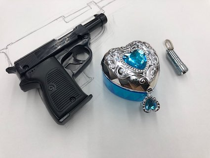
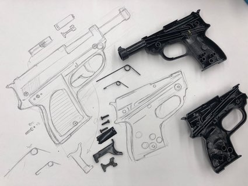

🌟100円ᴛᴏʏ🌟

🔆まず、総やら宝石箱、フラッシュを百円ショップで買った。
🔆銃を解体して内部構造を調べた。

🔆内部をさらに詳しく見て知っているために、紙に加え描いた。
🔆総以外のものは解体をしても別掲なかった。 フラッシュは電池、宝石箱は、目に見えるまま蓋とリング状の鍵だけであった。 まず、弾丸が出てくる部分にプラシッドを挟んだ。そして装飾リング状の鍵を付けた。既存の銃とは異なるデザインだと思う。
<反省点・改善点・分かったこと>
🔆異なるもの同士、ひとつの新しいものを作るというのは、本当に難しかった。 さらに作ってみたいの銃を撃つボタンを押すと、プラシッドが出るように作りたい。 リング状の鍵だけでも、装飾ではなく、新しい役割をして欲しい。 まだ技術も不足してアイデアも不足してこの程度しか作らなかったが、次にまた機会があればより一層適切に作ってみたい。